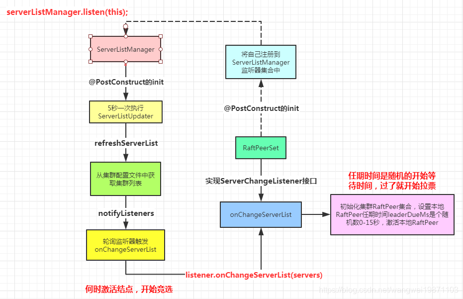
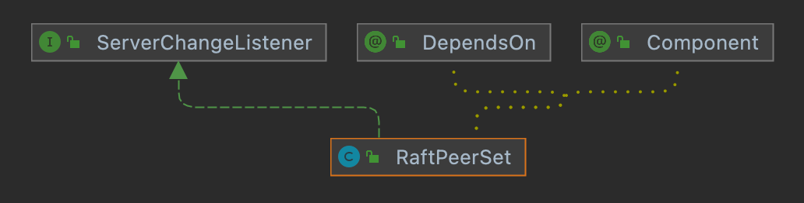
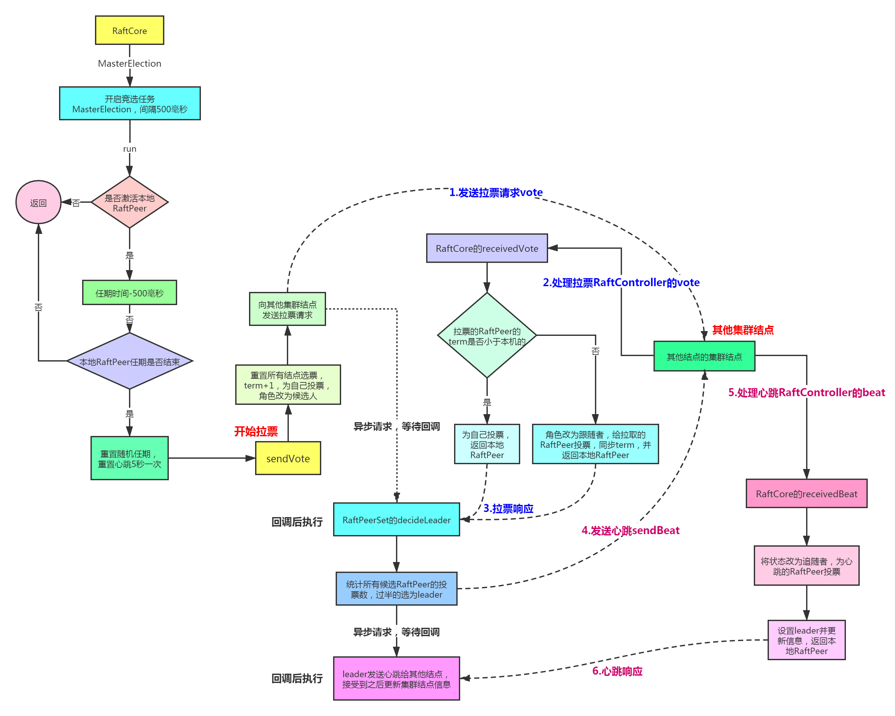

具体的raft算法原理百度下很多，总的来说就是一个相对公平的能达到共识的相对好理解的一个选举算法。那么结合nacos来说下他思想是怎么体现的。具体的算法理解可以看看这个小动画，可以帮助理解，比干的文字和图片都来的好。
ServerListManager的init，首先是ServerListManager的初始化方法，会开启间隔5秒的ServerListUpdater任务和间隔2秒的ServerStatusReporter任务：
1("serverListManager")2public class ServerListManager {3 4 5 6 public void init() { //---看2-1步---7 GlobalExecutor.registerServerListUpdater(new ServerListUpdater());8 // ---end---9 10 // ---看2-2步---11 GlobalExecutor.registerServerStatusReporter(new ServerStatusReporter(), 5000);12 // ---end---13 }14}x1public class ServerListUpdater implements Runnable {2
3 4 public void run() {5 try {6 // 这个任务里先会从本地的集群配置表里获取集群信息7 List<Server> refreshedServers = refreshServerList();8 List<Server> oldServers = servers;9
10 if (CollectionUtils.isEmpty(refreshedServers)) {11 Loggers.RAFT.warn("refresh server list failed, ignore it.");12 return;13 }14
15 boolean changed = false;16
17 List<Server> newServers = (List<Server>) CollectionUtils.subtract(refreshedServers, oldServers);18 if (CollectionUtils.isNotEmpty(newServers)) {19 servers.addAll(newServers);20 changed = true;21 Loggers.RAFT.info("server list is updated, new: {} servers: {}", newServers.size(), newServers);22 }23
24 List<Server> deadServers = (List<Server>) CollectionUtils.subtract(oldServers, refreshedServers);25 if (CollectionUtils.isNotEmpty(deadServers)) {26 servers.removeAll(deadServers);27 changed = true;28 Loggers.RAFT.info("server list is updated, dead: {}, servers: {}", deadServers.size(), deadServers);29 }30 // ---看2-1.1步---31 // 跟老服务进行对比32 if (changed) {33 notifyListeners();34 }35 // ---end---36
37 } catch (Exception e) {38 Loggers.RAFT.info("error while updating server list.", e);39 }40 }41}监听器的遍历，然后把新的服务器信息传递过去。
161private void notifyListeners() {2
3 GlobalExecutor.notifyServerListChange(new Runnable() {4 5 public void run() {6 for (ServerChangeListener listener : listeners) {7 // ---看2-3步---8 // 执行onChange方法 我们看下RaftPeerSet9 listener.onChangeServerList(servers);10 // ---end---11 12 listener.onChangeHealthyServerList(healthyServers);13 }14 }15 });16}检查服务器状态，有改变的话会通知：
551private class ServerStatusReporter implements Runnable {2
3 4 public void run() {5 try {6
7 if (RunningConfig.getServerPort() <= 0) {8 return;9 }10
11 for (String key : distroConfig.keySet()) {12 for (Server server : distroConfig.get(key)) {13 server.setAlive(System.currentTimeMillis() - server.getLastRefTime() < switchDomain.getDistroServerExpiredMillis());14 }15 }16
17 int weight = Runtime.getRuntime().availableProcessors() / 2;18 if (weight <= 0) {19 weight = 1;20 }21
22 long curTime = System.currentTimeMillis();23 String status = LOCALHOST_SITE + "#" + NetUtils.localServer() + "#" + curTime + "#" + weight + "\r\n";24
25 //send status to itself26 onReceiveServerStatus(status);27
28 List<Server> allServers = getServers();29
30 if (!contains(NetUtils.localServer())) {31 Loggers.SRV_LOG.error("local ip is not in serverlist, ip: {}, serverlist: {}", NetUtils.localServer(), allServers);32 return;33 }34
35 if (allServers.size() > 0 && !NetUtils.localServer().contains(UtilsAndCommons.LOCAL_HOST_IP)) {36 for (com.alibaba.nacos.naming.cluster.servers.Server server : allServers) {37 if (server.getKey().equals(NetUtils.localServer())) {38 continue;39 }40
41 Message msg = new Message();42 msg.setData(status);43
44 synchronizer.send(server.getKey(), msg);45
46 }47 }48 } catch (Exception e) {49 Loggers.SRV_LOG.error("[SERVER-STATUS] Exception while sending server status", e);50 } finally {51 GlobalExecutor.registerServerStatusReporter(this, switchDomain.getServerStatusSynchronizationPeriodMillis());52 }53
54 }55}

441("serverListManager")3public class RaftPeerSet implements ServerChangeListener {4 // 初始化5 6 public void init() {7 serverListManager.listen(this);8 }9 10 // 收到通知后，会更新自身的集群结点信息peers，然后设置ready的标记，11 // 表示可以进行选举了，这个什么鬼标记，这个还要看另外一个RaftCore的任务。12 13 public void onChangeServerList(List<Server> latestMembers) {14
15 Map<String, RaftPeer> tmpPeers = new HashMap<>(8);16 for (Server member : latestMembers) {17
18 if (peers.containsKey(member.getKey())) {19 tmpPeers.put(member.getKey(), peers.get(member.getKey()));20 continue;21 }22
23 RaftPeer raftPeer = new RaftPeer();24 raftPeer.ip = member.getKey();25
26 // first time meet the local server:27 if (NetUtils.localServer().equals(member.getKey())) {28 raftPeer.term.set(localTerm.get());29 }30
31 tmpPeers.put(member.getKey(), raftPeer);32 }33 34 // 标记35 // replace raft peer set:36 peers = tmpPeers;37
38 if (RunningConfig.getServerPort() > 0) {39 ready = true;40 }41
42 Loggers.RAFT.info("raft peers changed: " + latestMembers);43 }44} 初始化的时候进行一些设置，创建RaftPeer，设置相应的随机任期时间0-15秒和心跳超时时间0-5秒，其实就是raft协议里的竞选开始的超时时间，比如这里会进行本地RaftPeer的localTerm的设置，读本地文件/xxx/meta.properties的Term值，作为任期，其实就是一个状态标记，越大说明状态越新。然后会开启两个任务，一个是选举，500毫秒一次，一个是心跳，5秒一次。
341public void init() throws Exception {3
4 Loggers.RAFT.info("initializing Raft sub-system");5
6 executor.submit(notifier);7
8 long start = System.currentTimeMillis();9
10 datums = raftStore.loadDatums(notifier);11
12 setTerm(NumberUtils.toLong(raftStore.loadMeta().getProperty("term"), 0L));13
14 Loggers.RAFT.info("cache loaded, datum count: {}, current term: {}", datums.size(), peers.getTerm());15
16 while (true) {17 if (notifier.tasks.size() <= 0) {18 break;19 }20 Thread.sleep(1000L);21 }22
23 initialized = true;24
25 Loggers.RAFT.info("finish to load data from disk, cost: {} ms.", (System.currentTimeMillis() - start));26 27 // 注册竞选票28 GlobalExecutor.registerMasterElection(new MasterElection());29 // 注册心跳30 GlobalExecutor.registerHeartbeat(new HeartBeat());31
32 Loggers.RAFT.info("timer started: leader timeout ms: {}, heart-beat timeout ms: {}",33 GlobalExecutor.LEADER_TIMEOUT_MS, GlobalExecutor.HEARTBEAT_INTERVAL_MS);34}MasterElection：选举需要有ready的标记激活，这个就是为什么要等初始化好了才会进行选举。
HeartBeat：心跳有ready的标记激活才能开始。

现在已经可以选举了，最开始的时候每个结点的状态都是FOLLOWER跟随者，这里就是一个开始随机时间的等待，只要开始选举了，就会等待，直到第一个任期时间到了，重置时间，为什么要重置呢，因为如果不重置的话就一直投票啦，只有当没有leader的时候或者长时间没接受到leader心跳(只有leader才会发心跳)才要投票，所以会一定时间间隔如果没有收到leader的心跳，才可能会开始投票，只要收到了，时间又会被重置，也就不需要选举leader。只要任期时间过了就开始拉票了：
291public class MasterElection implements Runnable {2 3 public void run() {4 try {5 // 可以开始选举的标记6 if (!peers.isReady()) {7 return;8 }9 // 获取本地结点10 RaftPeer local = peers.local();11 // 任期-500毫秒12 local.leaderDueMs -= GlobalExecutor.TICK_PERIOD_MS;13 // 任期超时没到14 if (local.leaderDueMs > 0) {15 return;16 }17
18 // 重置任期超时时间和心跳时间，准备开始拉票19 local.resetLeaderDue();20 local.resetHeartbeatDue();21 // ---看3-2.1步---22 // 拉票23 sendVote();24 // ---end---25 } catch (Exception e) {26 Loggers.RAFT.warn("[RAFT] error while master election {}", e);27 }28
29 } 首先任期term+1，其实就是说明状态是新的，给自己头一票，然后状态设置为CANDIDATE候选者，然后把自己的信息发给其他集群结点，告诉其他结点我这次的任期状态，为谁投票。然后异步等待响应处理，决定leader。
481public void sendVote() {2
3 RaftPeer local = peers.get(NetUtils.localServer());4 Loggers.RAFT.info("leader timeout, start voting,leader: {}, term: {}",5 JSON.toJSONString(getLeader()), local.term);6
7 peers.reset();8
9 // 轮次+110 local.term.incrementAndGet();11 // 为自己投票12 local.voteFor = local.ip;13 // 候选者14 local.state = RaftPeer.State.CANDIDATE;15
16 Map<String, String> params = new HashMap<>(1);17 params.put("vote", JSON.toJSONString(local));18 // 除自己外的其他结点19 for (final String server : peers.allServersWithoutMySelf()) {20 // "/v1/ns/raft/vote"21 final String url = buildURL(server, API_VOTE);22 try {23 // ---看2.2步 "/v1/ns/raft/vote" 接口 ---24 HttpClient.asyncHttpPost(url, null, params, new AsyncCompletionHandler<Integer>() {25 26 public Integer onCompleted(Response response) throws Exception {27 if (response.getStatusCode() != HttpURLConnection.HTTP_OK) {28 Loggers.RAFT.error("NACOS-RAFT vote failed: {}, url: {}", response.getResponseBody(), url);29 return 1;30 }31 // 解析其他结点的信息32 RaftPeer peer = JSON.parseObject(response.getResponseBody(), RaftPeer.class);33
34 Loggers.RAFT.info("received approve from peer: {}", JSON.toJSONString(peer));35 36 // ---看2.3步---37 // 决定leader38 peers.decideLeader(peer);39 // ---end---40 return 0;41 }42 });43 } catch (Exception e) {44 Loggers.RAFT.warn("error while sending vote to server: {}", server);45 }46 }47 }48} 其他节点处理拉票请求，接受拉票请求，然后调用raftCore.receivedVote处理。
111("/vote")2public JSONObject vote(HttpServletRequest request, HttpServletResponse response) throws Exception {3 4 // ---往下看---5 // 拉票6 RaftPeer peer = raftCore.receivedVote(7 JSON.parseObject(WebUtils.required(request, "vote"), RaftPeer.class));8 // ---end---9
10 return JSON.parseObject(JSON.toJSONString(peer));11}receivedVote：首先注意这个方法是synchronized 修饰的，也就是同时只能一个线程来访问，先来后到，先判断任期，如果任期状态比自己小的，那还是自己状态最新，就投自己，然后返回。如果拉票的结点任期状态新，就投他，然后状态改为FOLLOWER跟随者，重新计时，同步任期状态。为什么任期状态这个时候会一样，因为初始的时候可能是0，一旦超时时间过了，就开始竞选了，任期状态+1，变为CANDIDATE候选者了呀，这样就跟拉票的任期可能一样，都是1。还有可能拉票的那个很久没同步了，突然leader挂了，但是他的状态是旧的，所以也不能选他，只能选自己。
341
2public synchronized RaftPeer receivedVote(RaftPeer remote) {3 // 不存在4 if (!peers.contains(remote)) {5 throw new IllegalStateException("can not find peer: " + remote.ip);6 }7 // 本机RaftPeer8 RaftPeer local = peers.get(NetUtils.localServer());9 // 任期数少于自己的10 if (remote.term.get() <= local.term.get()) {11 String msg = "received illegitimate vote" +12 ", voter-term:" + remote.term + ", votee-term:" + local.term;13
14 Loggers.RAFT.info(msg);15 if (StringUtils.isEmpty(local.voteFor)) {16 // 没投过的话投自己17 local.voteFor = local.ip;18 }19
20 return local;21 }22 // 设置任期到期时间，重新选举计时23 local.resetLeaderDue();24 // 作为跟随者25 local.state = RaftPeer.State.FOLLOWER;26 // 投发来的结点27 local.voteFor = remote.ip;28 // 同步term29 local.term.set(remote.term.get());30
31 Loggers.RAFT.info("vote {} as leader, term: {}", remote.ip, remote.term);32
33 return local;34} 拉票有结果返回后，就会开始决定leader，将投票者的信息更新进集群，然后遍历所有投票者，统计最多的候选人，如果票数过半就选为leader，并改变器状态，如果是本机的话还要进行LeaderElectFinishedEvent事件通知。
381public RaftPeer decideLeader(RaftPeer candidate) {2 // 放入结果RaftPeer3 peers.put(candidate.ip, candidate);4
5 SortedBag ips = new TreeBag();6 int maxApproveCount = 0;7 String maxApprovePeer = null;8 for (RaftPeer peer : peers.values()) {9 if (StringUtils.isEmpty(peer.voteFor)) {10 continue;11 }12 // 有投票过的13 ips.add(peer.voteFor);14 // 超过最多选票数的就更新15 if (ips.getCount(peer.voteFor) > maxApproveCount) {16 // 最多选票数17 maxApproveCount = ips.getCount(peer.voteFor);18 // 最多候选者19 maxApprovePeer = peer.voteFor;20 }21 }22 // 超过半数23 if (maxApproveCount >= majorityCount()) {24 // 查找票最多的候选者25 RaftPeer peer = peers.get(maxApprovePeer);26 // 选为leader27 peer.state = RaftPeer.State.LEADER;28
29 // 如果leader有改变的话就通知30 if (!Objects.equals(leader, peer)) {31 leader = peer;32 applicationContext.publishEvent(new LeaderElectFinishedEvent(this, leader));33 Loggers.RAFT.info("{} has become the LEADER", leader.ip);34 }35 }36
37 return leader;38 }心跳也有超时时间，到了后重置然后发心跳。
251public void run() {3 try {4
5 if (!peers.isReady()) {6 return;7 }8
9 RaftPeer local = peers.local();10 local.heartbeatDueMs -= GlobalExecutor.TICK_PERIOD_MS;11 if (local.heartbeatDueMs > 0) {12 return;13 }14 15 // 重置心跳任期16 local.resetHeartbeatDue();17 18 // ---看3-3.1步---19 sendBeat();20 // ---end---21 } catch (Exception e) {22 Loggers.RAFT.warn("[RAFT] error while sending beat {}", e);23 }24
25} 集群环境不是leader不能发，所以只有选为leader的那个结点才会发。每次发后会刷新任期时间，保证不用去竞选逻辑。然后封装leader结点信息，服务数据Service和InstanceList的key等信息，发送给其他结点。收到响应后异步更新其他结点信息。
1041public void sendBeat() throws IOException, InterruptedException {2 RaftPeer local = peers.local();3 // 不是leader且集群模式不能发4 if (local.state != RaftPeer.State.LEADER && !STANDALONE_MODE) {5 return;6 }7
8 if (Loggers.RAFT.isDebugEnabled()) {9 Loggers.RAFT.debug("[RAFT] send beat with {} keys.", datums.size());10 }11 // 重置任期12 local.resetLeaderDue();13
14 // build data15 JSONObject packet = new JSONObject();16 // 放入leader结点信息17 packet.put("peer", local);18
19 JSONArray array = new JSONArray();20
21 if (switchDomain.isSendBeatOnly()) {22 Loggers.RAFT.info("[SEND-BEAT-ONLY] {}", String.valueOf(switchDomain.isSendBeatOnly()));23 }24
25 if (!switchDomain.isSendBeatOnly()) {26 // 还要带数据key27 for (Datum datum : datums.values()) {28
29 JSONObject element = new JSONObject();30 // 加入不同类型的key31 if (KeyBuilder.matchServiceMetaKey(datum.key)) {32 element.put("key", KeyBuilder.briefServiceMetaKey(datum.key));33 } else if (KeyBuilder.matchInstanceListKey(datum.key)) {34 element.put("key", KeyBuilder.briefInstanceListkey(datum.key));35 }36 element.put("timestamp", datum.timestamp);37
38 array.add(element);39 }40 }41 // 带上数据的key42 packet.put("datums", array);43 // broadcast44 Map<String, String> params = new HashMap<String, String>(1);45 params.put("beat", JSON.toJSONString(packet));46
47 String content = JSON.toJSONString(params);48
49 ByteArrayOutputStream out = new ByteArrayOutputStream();50 GZIPOutputStream gzip = new GZIPOutputStream(out);51 gzip.write(content.getBytes(StandardCharsets.UTF_8));52 gzip.close();53
54 byte[] compressedBytes = out.toByteArray();55 String compressedContent = new String(compressedBytes, StandardCharsets.UTF_8);56
57 if (Loggers.RAFT.isDebugEnabled()) {58 Loggers.RAFT.debug("raw beat data size: {}, size of compressed data: {}",59 content.length(), compressedContent.length());60 }61 62 // 发送给除了自己以外的63 for (final String server : peers.allServersWithoutMySelf()) {64 try {65 // "/raft/beat"66 final String url = buildURL(server, API_BEAT);67 if (Loggers.RAFT.isDebugEnabled()) {68 Loggers.RAFT.debug("send beat to server " + server);69 }70 // 请求"/raft/beat"接口， ---看3-3.1.2步---71 HttpClient.asyncHttpPostLarge(url, null, compressedBytes, new AsyncCompletionHandler<Integer>() {72 73 public Integer onCompleted(Response response) throws Exception {74 if (response.getStatusCode() != HttpURLConnection.HTTP_OK) {75 Loggers.RAFT.error("NACOS-RAFT beat failed: {}, peer: {}",76 response.getResponseBody(), server);77 MetricsMonitor.getLeaderSendBeatFailedException().increment();78 return 1;79 }80 81 // ---看3-3.1.1步---82 // 更新节点信息83 //收到响应就添加RaftPeer84 peers.update(JSON.parseObject(response.getResponseBody(), RaftPeer.class));85 // ---end---86 if (Loggers.RAFT.isDebugEnabled()) {87 Loggers.RAFT.debug("receive beat response from: {}", url);88 }89 return 0;90 }91
92 93 public void onThrowable(Throwable t) {94 Loggers.RAFT.error("NACOS-RAFT error while sending heart-beat to peer: {} {}", server, t);95 MetricsMonitor.getLeaderSendBeatFailedException().increment();96 }97 });98 } catch (Exception e) {99 Loggers.RAFT.error("error while sending heart-beat to peer: {} {}", server, e);100 MetricsMonitor.getLeaderSendBeatFailedException().increment();101 }102 }103
104}更新节点信息。
41 public RaftPeer update(RaftPeer peer) {2 peers.put(peer.ip, peer);3 return peer;4 }心跳接口
191(value = "/beat", method = RequestMethod.POST)3public JSONObject beat(HttpServletRequest request, HttpServletResponse response) throws Exception {4
5 String entity = new String(IoUtils.tryDecompress(request.getInputStream()), "UTF-8");6// String value = Arrays.asList(entity).toArray(new String[1])[0];7 String value = URLDecoder.decode(entity, "UTF-8");8 value = URLDecoder.decode(value, "UTF-8");9
10 JSONObject json = JSON.parseObject(value);11 JSONObject beat = JSON.parseObject(json.getString("beat"));12 13 // ---往下看1---14 // 接收心跳信息15 RaftPeer peer = raftCore.receivedBeat(beat);16 // ---end---17
18 return JSON.parseObject(JSON.toJSONString(peer));19}RaftCore.receivedBeat：主要就是比对一下信息，更新本地信息。当然如果有需要同步信息的话，还要给leader发消息，获取同步的信息，我这里基本略过了，很长，有兴趣的可以细看。
511 public RaftPeer receivedBeat(JSONObject beat) throws Exception {2 // 本地的3 final RaftPeer local = peers.local();4 // 远程的leader5 final RaftPeer remote = new RaftPeer();6 remote.ip = beat.getJSONObject("peer").getString("ip");7 remote.state = RaftPeer.State.valueOf(beat.getJSONObject("peer").getString("state"));8 remote.term.set(beat.getJSONObject("peer").getLongValue("term"));9 remote.heartbeatDueMs = beat.getJSONObject("peer").getLongValue("heartbeatDueMs");10 remote.leaderDueMs = beat.getJSONObject("peer").getLongValue("leaderDueMs");11 remote.voteFor = beat.getJSONObject("peer").getString("voteFor");12 // 如果远程不是leader，无效13 if (remote.state != RaftPeer.State.LEADER) {14 Loggers.RAFT.info("[RAFT] invalid state from master, state: {}, remote peer: {}",15 remote.state, JSON.toJSONString(remote));16 throw new IllegalArgumentException("invalid state from master, state: " + remote.state);17 }18 // 如果本地大于远程的，心跳信息过期了19 if (local.term.get() > remote.term.get()) {20 Loggers.RAFT.info("[RAFT] out of date beat, beat-from-term: {}, beat-to-term: {}, remote peer: {}, and leaderDueMs: {}"21 , remote.term.get(), local.term.get(), JSON.toJSONString(remote), local.leaderDueMs);22 throw new IllegalArgumentException("out of date beat, beat-from-term: " + remote.term.get()23 + ", beat-to-term: " + local.term.get());24 }25 // 本地不是跟随者，可能是候选人，所以将自己变为跟随者，选远程的leader26 if (local.state != RaftPeer.State.FOLLOWER) {27
28 Loggers.RAFT.info("[RAFT] make remote as leader, remote peer: {}", JSON.toJSONString(remote));29 // mk follower30 local.state = RaftPeer.State.FOLLOWER;31 local.voteFor = remote.ip;32 }33 // 数据key集合34 final JSONArray beatDatums = beat.getJSONArray("datums");35 // 刷新竞选时间36 local.resetLeaderDue();37 local.resetHeartbeatDue();38 // ---往下看2---39 // 设置leader40 peers.makeLeader(remote);41 // ---end---42 // 不只是心跳，可能还要获取leader的数据同步43 if (!switchDomain.isSendBeatOnly()) {44 // ---省略的内容往下看4---45 ......46 // ---end---47 48 }49
50 return local;51 }makeLeader：因为现在集群里面可能有其以前的leader存在，并不是和新的leader是同一个，所以要去获得以前leader的信息进行更新，其实就是把集群信息更新下。其实除了leader可以获取到其他结点的信息，其他结点只知道自己和leader的最新信息。
431 public RaftPeer makeLeader(RaftPeer candidate) {2 // leader改变了3 if (!Objects.equals(leader, candidate)) {4 // 设置5 leader = candidate;6 // 通知7 applicationContext.publishEvent(new MakeLeaderEvent(this, leader));8 Loggers.RAFT.info("{} has become the LEADER, local: {}, leader: {}",9 leader.ip, JSON.toJSONString(local()), JSON.toJSONString(leader));10 }11
12 for (final RaftPeer peer : peers.values()) {13 Map<String, String> params = new HashMap<>(1);14 // 如果存在其他以前的leader15 if (!Objects.equals(peer, candidate) && peer.state == RaftPeer.State.LEADER) {16 try {17 // 请求以前过期的leader的信息 "/raft/peer"18 String url = RaftCore.buildURL(peer.ip, RaftCore.API_GET_PEER);19 // 请求"/raft/peer"接口 ---往下看3---20 HttpClient.asyncHttpGet(url, null, params, new AsyncCompletionHandler<Integer>() {21 22 public Integer onCompleted(Response response) throws Exception {23 if (response.getStatusCode() != HttpURLConnection.HTTP_OK) {24 Loggers.RAFT.error("[NACOS-RAFT] get peer failed: {}, peer: {}",25 response.getResponseBody(), peer.ip);26 peer.state = RaftPeer.State.FOLLOWER;27 return 1;28 }29 // 更新30 update(JSON.parseObject(response.getResponseBody(), RaftPeer.class));31
32 return 0;33 }34 });35 } catch (Exception e) {36 peer.state = RaftPeer.State.FOLLOWER;37 Loggers.RAFT.error("[NACOS-RAFT] error while getting peer from peer: {}", peer.ip);38 }39 }40 }41 // 更新42 return update(candidate);43}/raft/peer接口：
181("/peer")2public JSONObject getPeer(HttpServletRequest request, HttpServletResponse response) {3 List<RaftPeer> peers = raftCore.getPeers();4 RaftPeer peer = null;5
6 for (RaftPeer peer1 : peers) {7 if (StringUtils.equals(peer1.ip, NetUtils.localServer())) {8 peer = peer1;9 }10 }11
12 if (peer == null) {13 peer = new RaftPeer();14 peer.ip = NetUtils.localServer();15 }16
17 return JSON.parseObject(JSON.toJSONString(peer));18}1中省略的内容：其实就是根据leader带来的数据key，进行比对，要更新的就批量更新，收到后区分好Service还是InstanceList的进行更新，通知，并且更新任期状态。
1631//不只是心跳2if (!switchDomain.isSendBeatOnly()) {3
4 Map<String, Integer> receivedKeysMap = new HashMap<>(datums.size());5 //放入所有的要更新服务信息的key6 for (Map.Entry<String, Datum> entry : datums.entrySet()) {7 receivedKeysMap.put(entry.getKey(), 0);8 }9
10 // now check datums11 List<String> batch = new ArrayList<>();12
13 int processedCount = 0;14 if (Loggers.RAFT.isDebugEnabled()) {15 Loggers.RAFT.debug("[RAFT] received beat with {} keys, RaftCore.datums' size is {}, remote server: {}, term: {}, local term: {}",16 beatDatums.size(), datums.size(), remote.ip, remote.term, local.term);17 }18 //遍历所有带来的数据的key19 for (Object object : beatDatums) {20 processedCount = processedCount + 1;21
22 JSONObject entry = (JSONObject) object;23 String key = entry.getString("key");24 final String datumKey;25
26 if (KeyBuilder.matchServiceMetaKey(key)) {27 datumKey = KeyBuilder.detailServiceMetaKey(key);28 } else if (KeyBuilder.matchInstanceListKey(key)) {29 datumKey = KeyBuilder.detailInstanceListkey(key);30 } else {31 // ignore corrupted key:32 continue;33 }34
35 long timestamp = entry.getLong("timestamp");36
37 receivedKeysMap.put(datumKey, 1);38
39 try {40 if (datums.containsKey(datumKey) && datums.get(datumKey).timestamp.get() >= timestamp && processedCount < beatDatums.size()) {41 continue;42 }43
44 if (!(datums.containsKey(datumKey) && datums.get(datumKey).timestamp.get() >= timestamp)) {45 batch.add(datumKey);46 }47
48 if (batch.size() < 50 && processedCount < beatDatums.size()) {49 continue;50 }51
52 String keys = StringUtils.join(batch, ",");53
54 if (batch.size() <= 0) {55 continue;56 }57
58 Loggers.RAFT.info("get datums from leader: {}, batch size is {}, processedCount is {}, datums' size is {}, RaftCore.datums' size is {}"59 , getLeader().ip, batch.size(), processedCount, beatDatums.size(), datums.size());60
61 // update datum entry "/raft/datum"62 String url = buildURL(remote.ip, API_GET) + "?keys=" + URLEncoder.encode(keys, "UTF-8");63 // ---往下看5 请求"/raft/datum"接口---64 HttpClient.asyncHttpGet(url, null, null, new AsyncCompletionHandler<Integer>() {65 66 public Integer onCompleted(Response response) throws Exception {67 if (response.getStatusCode() != HttpURLConnection.HTTP_OK) {68 return 1;69 }70
71 List<JSONObject> datumList = JSON.parseObject(response.getResponseBody(), new TypeReference<List<JSONObject>>() {72 });73
74 for (JSONObject datumJson : datumList) {75 OPERATE_LOCK.lock();76 Datum newDatum = null;77 try {78
79 Datum oldDatum = getDatum(datumJson.getString("key"));80
81 if (oldDatum != null && datumJson.getLongValue("timestamp") <= oldDatum.timestamp.get()) {82 Loggers.RAFT.info("[NACOS-RAFT] timestamp is smaller than that of mine, key: {}, remote: {}, local: {}",83 datumJson.getString("key"), datumJson.getLongValue("timestamp"), oldDatum.timestamp);84 continue;85 }86
87 if (KeyBuilder.matchServiceMetaKey(datumJson.getString("key"))) {88 Datum<Service> serviceDatum = new Datum<>();89 serviceDatum.key = datumJson.getString("key");90 serviceDatum.timestamp.set(datumJson.getLongValue("timestamp"));91 serviceDatum.value =92 JSON.parseObject(JSON.toJSONString(datumJson.getJSONObject("value")), Service.class);93 newDatum = serviceDatum;94 }95
96 if (KeyBuilder.matchInstanceListKey(datumJson.getString("key"))) {97 Datum<Instances> instancesDatum = new Datum<>();98 instancesDatum.key = datumJson.getString("key");99 instancesDatum.timestamp.set(datumJson.getLongValue("timestamp"));100 instancesDatum.value =101 JSON.parseObject(JSON.toJSONString(datumJson.getJSONObject("value")), Instances.class);102 newDatum = instancesDatum;103 }104
105 if (newDatum == null || newDatum.value == null) {106 Loggers.RAFT.error("receive null datum: {}", datumJson);107 continue;108 }109
110 raftStore.write(newDatum);111
112 datums.put(newDatum.key, newDatum);113 notifier.addTask(newDatum.key, ApplyAction.CHANGE);114
115 local.resetLeaderDue();116
117 if (local.term.get() + 100 > remote.term.get()) {118 getLeader().term.set(remote.term.get());119 local.term.set(getLeader().term.get());120 } else {121 local.term.addAndGet(100);122 }123
124 raftStore.updateTerm(local.term.get());125
126 Loggers.RAFT.info("data updated, key: {}, timestamp: {}, from {}, local term: {}",127 newDatum.key, newDatum.timestamp, JSON.toJSONString(remote), local.term);128
129 } catch (Throwable e) {130 Loggers.RAFT.error("[RAFT-BEAT] failed to sync datum from leader, datum: {}", newDatum, e);131 } finally {132 OPERATE_LOCK.unlock();133 }134 }135 TimeUnit.MILLISECONDS.sleep(200);136 return 0;137 }138 });139
140 batch.clear();141
142 } catch (Exception e) {143 Loggers.RAFT.error("[NACOS-RAFT] failed to handle beat entry, key: {}", datumKey);144 }145
146 }147
148 List<String> deadKeys = new ArrayList<>();149 for (Map.Entry<String, Integer> entry : receivedKeysMap.entrySet()) {150 if (entry.getValue() == 0) {151 deadKeys.add(entry.getKey());152 }153 }154
155 for (String deadKey : deadKeys) {156 try {157 deleteDatum(deadKey);158 } catch (Exception e) {159 Loggers.RAFT.error("[NACOS-RAFT] failed to remove entry, key={} {}", deadKey, e);160 }161 }162
163}RaftController的get：
其实就是获取key所有的服务信息传过去。
181("/datum")2public String get(HttpServletRequest request, HttpServletResponse response) throws Exception {3
4 response.setHeader("Content-Type", "application/json; charset=" + getAcceptEncoding(request));5 response.setHeader("Cache-Control", "no-cache");6 response.setHeader("Content-Encode", "gzip");7 String keysString = WebUtils.required(request, "keys");8 keysString = URLDecoder.decode(keysString, "UTF-8");9 String[] keys = keysString.split(",");10 List<Datum> datums = new ArrayList<Datum>();11
12 for (String key : keys) {13 Datum datum = raftCore.getDatum(key);14 datums.add(datum);15 }16
17 return JSON.toJSONString(datums);18}好了，基本的竞选和数据同步流程说完了，数据同步的前面也讲过了，会转发给
leader去同步，不过这里好像不是二阶段的，leader直接去同步数据了，其他的细节自己再研究下好了，内部东西太多了，还是要花时间研究。